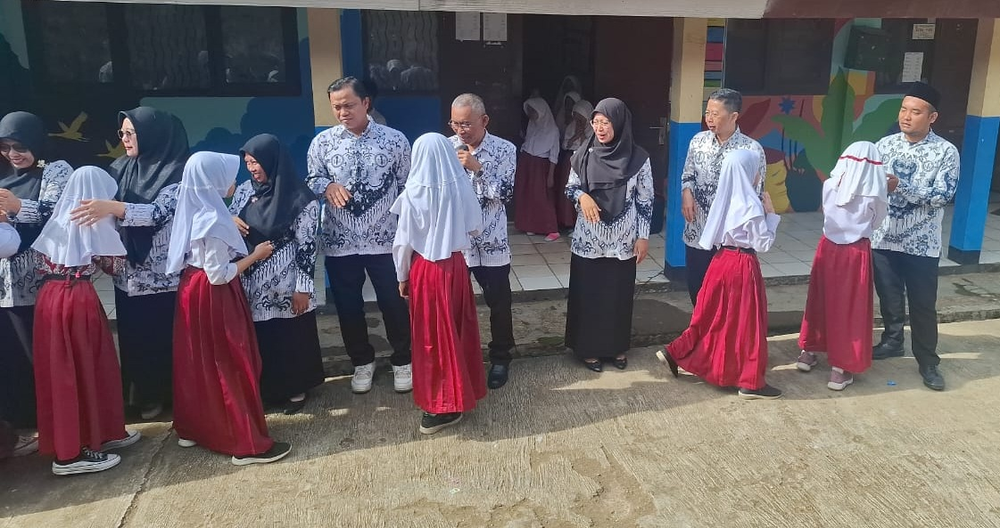
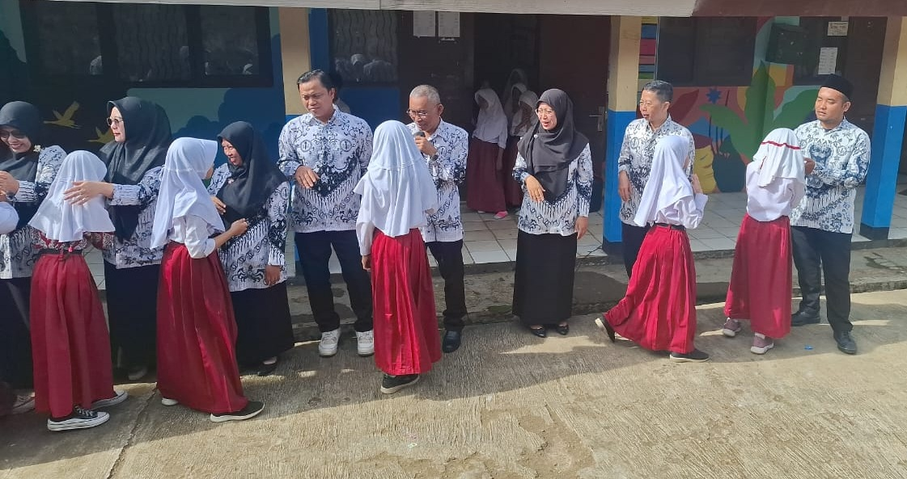

SD Negeri Cimapag
SD Negeri Cimapag
SD Negeri Cimapag
SD Negeri Cimapag

Pemerintah melalui Kementerian Pendidikan, Kebudayaan, Riset, dan Teknologi resmi merilis Kertas Kerja Bantuan Operasional Satuan Pendidikan (BOSP) untuk Tahun Anggaran 2026. Dokumen ini menjadi a cuan penting bagi setiap satuan pendidikan dalam merencanakan penggunaan dana operasional secara tepat, efektif, dan sesuai ketentuan terbaru.
Dengan rilisnya dokumen ini, satuan pendidikan sudah bisa mulai melakukan penyusunan rencana anggaran serta menyesuaikan program kerja untuk pelaksanaan tahun 2026. Penyusunan lebih awal diharapkan dapat membantu sekolah memetakan kebutuhan secara lebih akurat dan memastikan seluruh kegiatan berjalan tepat waktu.
Sumber: Instagram @aplikasi.rkas.
Dalam rangka memperingati Hari Guru Nasional yang ke-80, SD Negeri Cimapag dengan bangga menyelenggarakan serangkaian kegiatan sebagai bentuk penghormatan dan apresiasi kepada para pahlawan tanpa tanda jasa. Pada momentum istimewa ini, kami ingin mengangkat kembali semangat dedikasi, ketulusan, dan perjuangan para guru dalam membimbing serta membentuk karakter generasi masa depan.
Sebagai wujud penghargaan, sekolah mengadakan beberapa kegiatan khusus, di antaranya:
Melalui rangkaian kegiatan ini, diharapkan tumbuh rasa hormat, terima kasih, dan kebersamaan antara guru serta siswa.
Semoga peringatan Hari Guru ke-80 ini menjadi pengingat bahwa setiap ilmu, setiap nasihat, dan setiap langkah kecil yang diberikan para guru akan menjadi cahaya bagi masa depan bangsa.
Selamat Hari Guru ke-80.

 


Ini adalah ringkasan kegiatan terbaru dari Eskul / Perlombaan / Prestasi.
Buka Halaman Lengkap{kind=link}
{kind=link}
{kind=link}